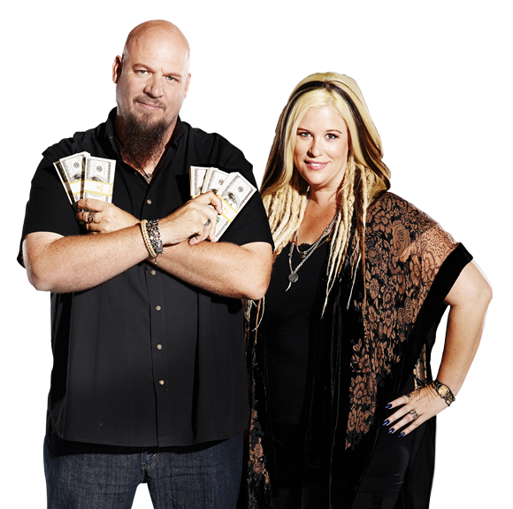

These cars are
fast and furious
Super Cars for Auction
Copart is partnering with Jeff Allen, owner of Flat 12 Gallery, to give you an incredible opportunity to bid on these supercars. Jeff is a third-generation car guy brought up around an auto shop. When he’s not building amazing cars, Jeff cohosts one of our favorite automotive podcasts, the SkidMarks Show.
All of Jeff Allen’s cars are meticulously cared for and in excellent condition. Do some of them look familiar? Well, if you’re a fan of a certain high-octane film series about cars being driven too fast and somewhat furiously, you might recognize some of these cars from the silver screen.
Navigate these car auctions and bid to own your very own super car.